Entente - Mobile Gaming App

The first-ever mobile app that seamlessly integrates video communication with a wide array of family-friendly games!
Project Overview
Entente, the revolutionary social gaming app, marks a paradigm shift in digital entertainment by seamlessly blending live video communication with an extensive collection of family-friendly games. This groundbreaking project envisions a platform where users can connect in real-time through video chat while engaging in classic board games, card games, karaoke sing-alongs, and beloved arcade games like Pac-Man. Entente aims to create a unique and enjoyable experience, promoting fun and connection among family and friends. The app features a point-based system for all games, fostering friendly competition and allowing users to achieve rankings such as 1st, 2nd, 3rd place. Leaderboards for friends, club teams, and national standings add an extra layer of excitement and community building.
Problem Statement
Despite the increasing demand for virtual social experiences, the current landscape lacks a comprehensive platform that seamlessly integrates live video communication with diverse family-friendly games. Users often face fragmented interactions across various apps, hindering the potential for immersive and enjoyable virtual gatherings. This fragmented approach limits real-time connections and diminishes the overall gaming experience. To address these challenges and provide a unified solution, the development of Entente, the first-ever social gaming app, is imperative. It aims to eliminate the pain points of scattered social interactions and limited virtual family and friend activities.
Project Goals
The primary objective is to provide a unified and seamless user experience through the development of a dedicated SunRunner app. This app aims to simplify interactions with the BRT system, offering route planning, real-time tracking, fare payment, and accessibility information all within a single platform. Additionally, it seeks to streamline the fare payment process, making ticket purchases more user-friendly. Ensuring access to real-time information, promoting inclusivity with robust accessibility features, supporting local businesses along the route, and contributing to environmental and economic sustainability are also key goals.
Design Process
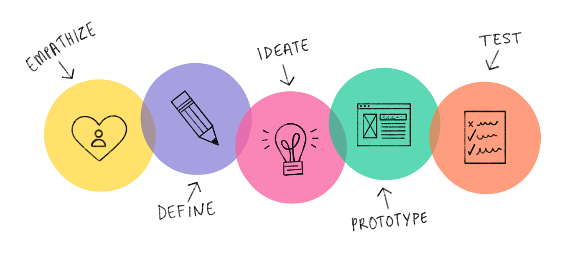Entente's design process followed a user-centric approach, emphasizing user research, competitive analysis, prototyping, usability testing, and iterative design refinements. The app's interface is crafted to be intuitive and engaging, seamlessly integrating video communication with gaming elements. Prototypes undergo rigorous testing with real users, ensuring the app meets user expectations and provides an enjoyable and accessible gaming and communication experience.
Project Timeline
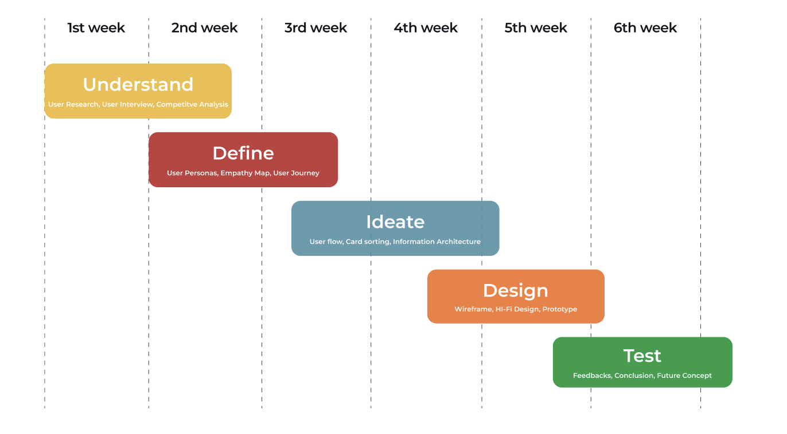Target Audience
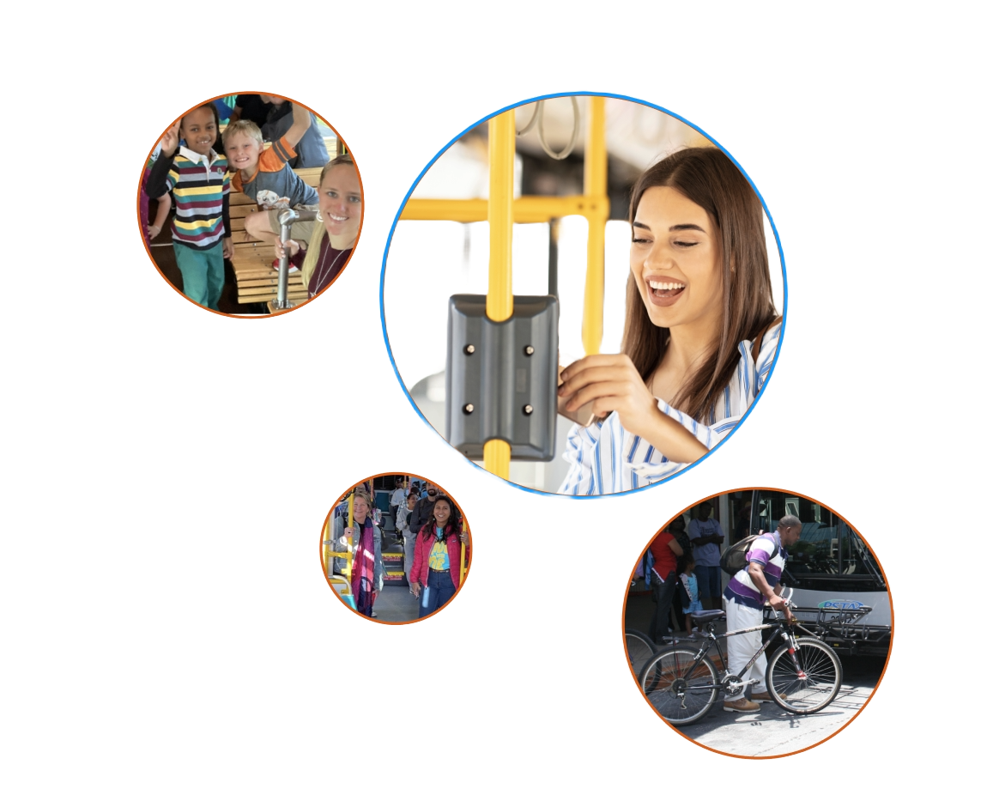Entente is designed for users of all ages who seek a fun and interactive platform to connect with family and friends. The app caters to a broad audience, fostering a sense of community through shared gaming experiences, making it an ideal choice for virtual gatherings, whether for an hour or an entire gaming session.
User Research
User research for Entente includes surveys and interviews to understand user preferences, pain points, and expectations from a social gaming app. Insights gained from this research will inform the app's features, game selection, and design choices..
Competitive Analysis
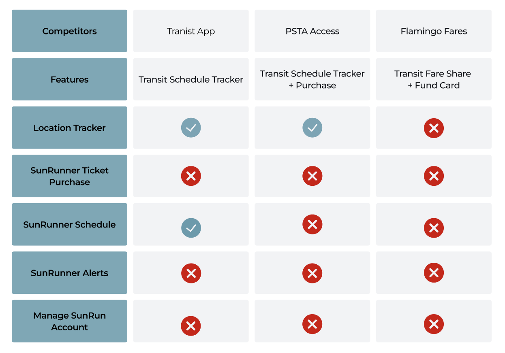A competitive analysis is crucial to inform the app's design and features. It includes evaluating existing transit apps and similar services in the region to identify strengths, weaknesses, and opportunities. This analysis will guide the app's differentiation and the incorporation of best practices from competitors.
Unique Features
> Users can engage in video-cam sessions while playing family-friendly board games, card games, karaoke sing-alongs, and classic arcade games.
> Leaderboards for friends, club teams, and national rankings add a competitive and social aspect to the gaming experience.
> Club team creation and joining feature allows users to form gaming communities within the app.
> Family-friendly games with a point-based system for high scores and overall winners (1st, 2nd, 3rd placers).
Quantitative Research
In the design phase of the Entente social gaming app, quantitative research is primarily focused on surveys and data analysis. Surveys will be distributed to potential users, seeking numerical responses on their preferences, expectations, and challenges related to social gaming apps. Additionally, data analytics will be employed to assess user interactions and preferences with similar existing apps, examining factors such as user reviews, ratings, and feature usage. These quantitative insights will guide the app's design choices, ensuring it aligns with user expectations and needs, even before the actual development phase begins.
Once my research was finalized and I gained a unique perspective on how to apporach this (much needed) mobile app, i got to work with some sketches and evetually wireframing on figma.
Low-Fidelity Wireframe
For my first intial lofi design I focused on establishing a strong base. With a strong intial design base captivating the intent behind the "why", it becomes easier to make adjustments based of user feedback from user testing..
~ I always strive to do my best work whether it be skeches, intial designs or even just doodles!

Screeners
> How frequently do you currently use social gaming apps?
> Have you participated in live video gaming experiences before?
> What features do you find most appealing in social gaming apps?
> Which gaming genres do you prefer for social gaming?
> What bothers you most about existing social gaming apps?
Observations: Survey, Google, Yelp
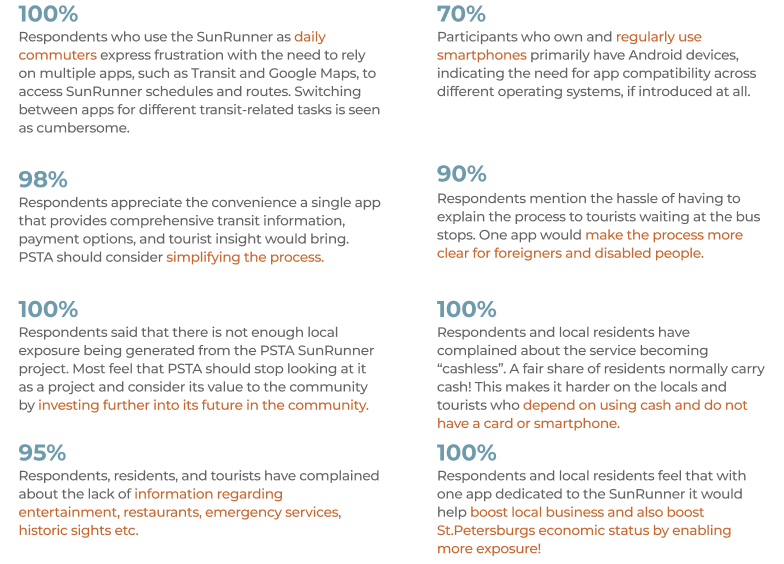Empathy Map - Ed
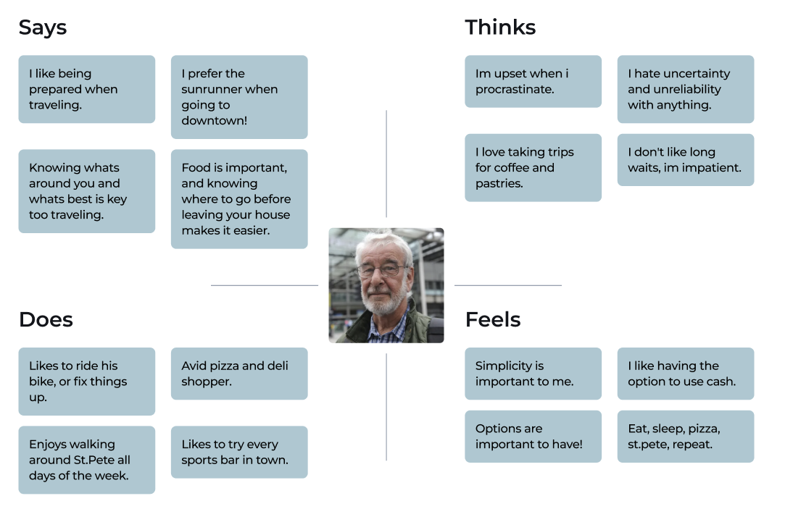Empathy Map - Ty
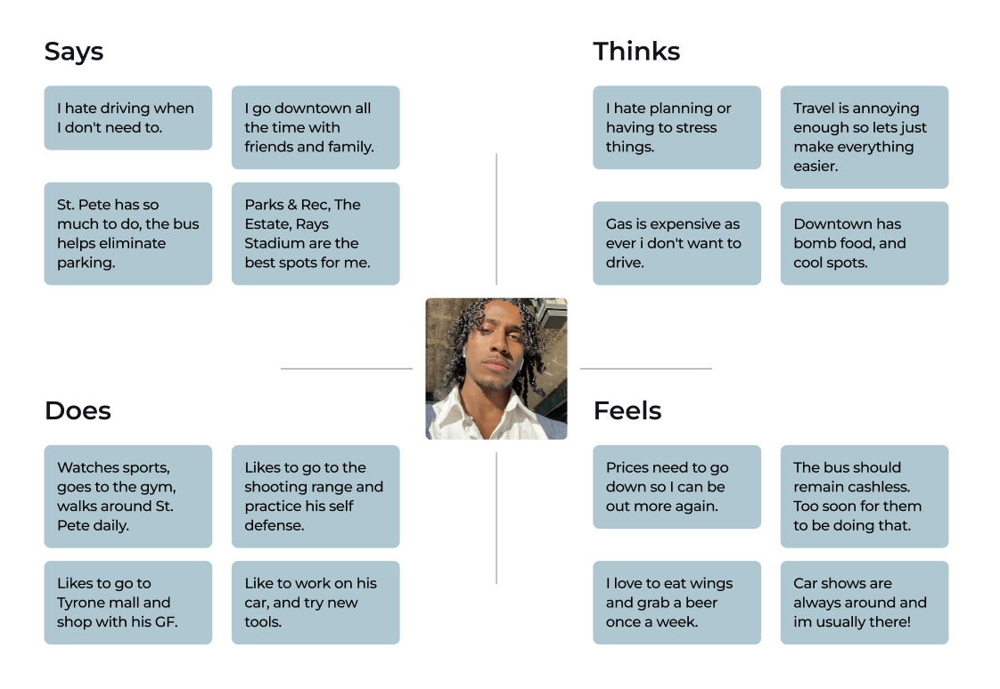Empathy Map - Vinny

User Persona
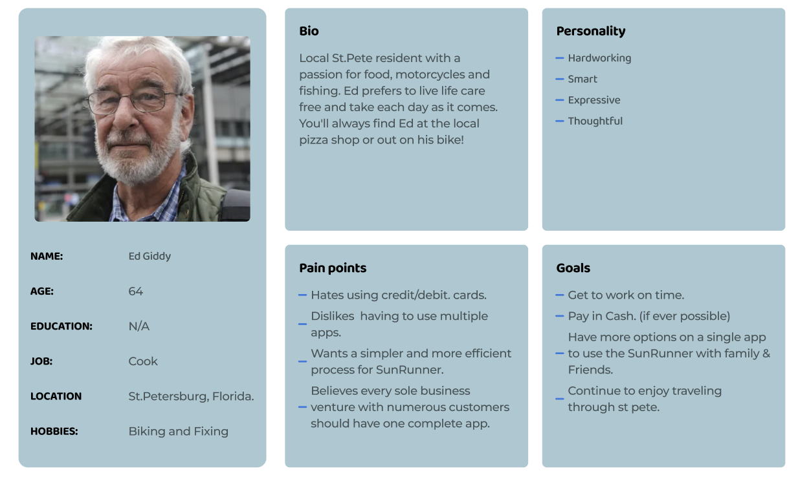User Persona
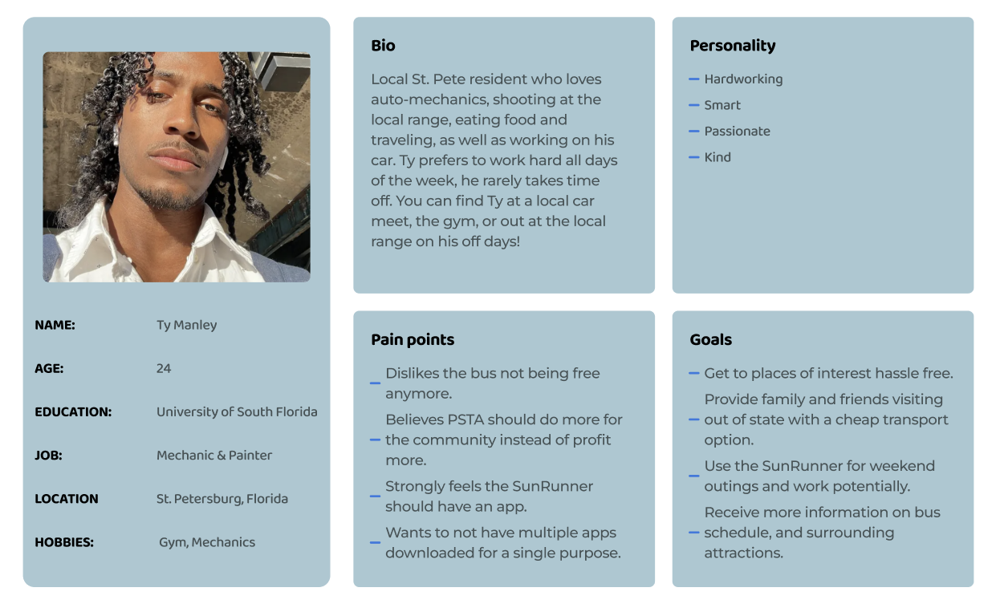User Persona
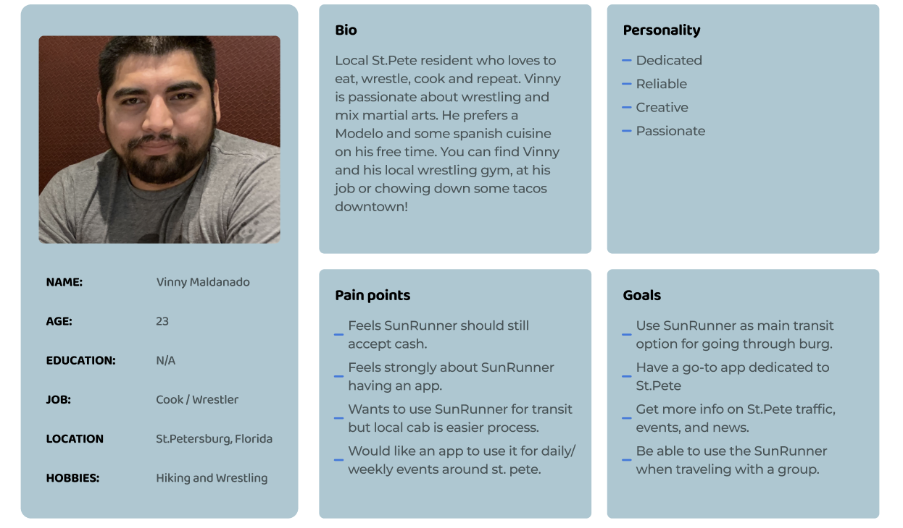Pain Points

Sketches For Low-Fi Version


User Testing - Prototype v1.0
Users were given a chance to give feedback from the intial design. In our user journey we will discuss the chganes in which they found should be implemented for better UX...
User Journey 1

User Journey 2
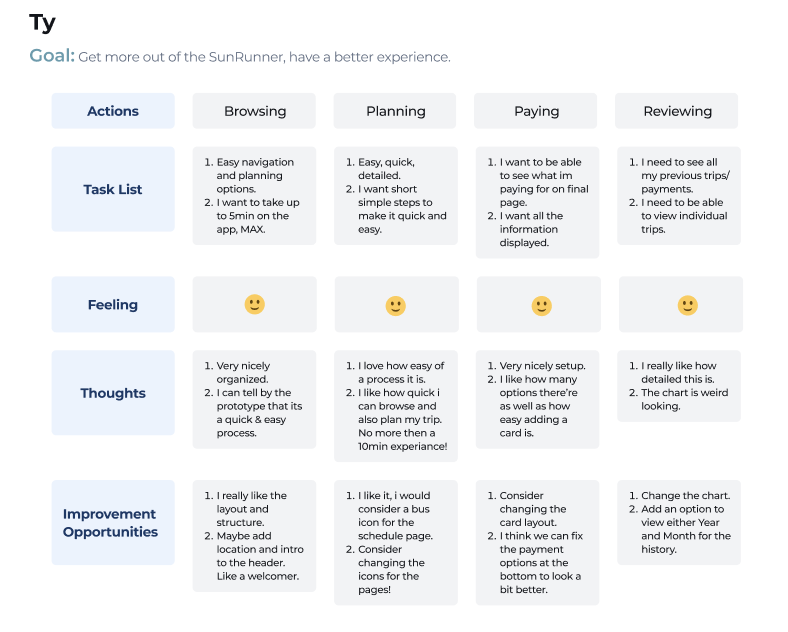User Journey 3
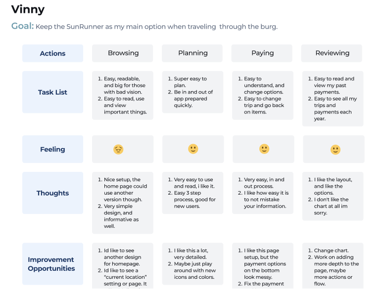High-Fidelity Designs

Other Screens

Prototype Final Version
Key Takeaways
Throughout the project, several crucial takeaways emerged. First and foremost, users expressed a clear desire for simplicity when interacting with the SunRunner BRT system. The current setup involving multiple apps and payment options was deemed unnecessarily complex and time-consuming. A unified, user-friendly mobile app that simplifies the entire transit experience is highly sought after. Additionally, users highlighted the importance of comprehensive and real-time information about SunRunner services, including schedules, routes, and service updates.
Providing accurate and up-to-date information within the app is paramount for building user trust and encouraging regular use. Lastly, streamlining fare payment options within the app was recognized as a priority, myself and our three users all felt that PSTA does not need to partnered up with Flamingo fares. In fact, after a quick analysis of flamingos service, we believe that PSTA would save money just using their own app to store and process payments for their customers! Users favored the convenience of reducing the number of choices in the overall user experience, simplicity always wins.
Roadmap
The project's roadmap comprised several crucial phases that guided its successful execution. It commenced with an extensive user research phase, encompassing surveys and data analysis, to comprehend user behaviors, preferences, and pain points concerning the SunRunner BRT system and similar transit apps. A comprehensive competitive analysis followed, yielding insights into successful features in other transit apps.
Next, the project focused on addressing three primary pain points: complexity, information gaps, and options. These pain points became the project's core focus during the subsequent design and prototyping phase, where wireframes and prototypes were developed with a specific emphasis on simplicity, comprehensive information, and streamlined fare payment. Usability testing with real users informed design refinements before transitioning to the development phase. Throughout development, testing and feedback collection ensured continuous improvements.
To Further improve on this project a revamp of the PSTA website would be beneficial in correlation with the new app and its features!
Design System